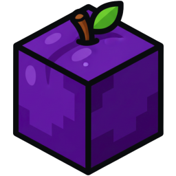

PLUMYA / OYUNCU EL KİTABI SKYBLOCK
Adanın hikâyesi
burada başlıyor.
İlk adanı kurmaktan zindanlarda ilerlemeye kadar, Plumya'da ihtiyacın olan her şey bu rehberde.
Yeni misin? İlk beş dakikada neler yapacağını öğren.
PLUMYA
SKYBLOCKOYUNCU REHBERİ / 01
SKYBLOCKOYUNCU REHBERİ / 01

I / REHBER KİTAPLIĞI
Merak ettiğini bul.
Her sistem kendi yerinde. Karmaşık menüler yerine, doğrudan aradığın bilgiye git.
Nereden başlamalı?
- 01Adanı kur
/is createkomutuyla kendi adanı oluştur. - 02İlk araçlarını al
/kitsile başlangıç kitini al, günlük görevleri keşfet. - 03Adanı geliştir
Yükseltmeleri, cevher üretecini ve meslekleri öğren.
- 04Yeni maceralara çık
Zindanlarda ilerle, çekirdek topla ve demirciyi keşfet.
PLUMYA SKYBLOCKGüzel bir ada, küçük bir adımla başlar.İlk adımını at ↗